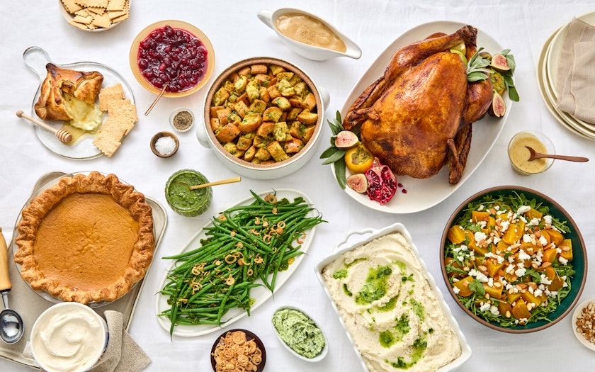

I remember during the COVID-19 pandemic, a TikTok mom would post dinner recipes using the grocery section of Dollar Tree. I thought this was cool since it helped provide low-income families with fun recipes. With one of my previous blog posts revealing that AI can generate grocery lists and recipes, I decided to ask Gemini if it could create a Thanksgiving menu only using Dollar Tree items.
This is how my conversation with Gemini went:
USER
Help me come up with a Thanksgiving menu (for 2) by only shopping at Dollar Tree.
ASSISTANT
This is a fun challenge! Dollar Tree requires creativity, but you can definitely pull off a surprisingly satisfying Thanksgiving meal for two. The key is leaning into shelf-stable staples and comfort food.
Here’s a menu designed entirely from Dollar Tree items, along with a shopping list and basic instructions:
Dollar Tree Thanksgiving for Two
The Vibe: Cozy, comforting, and surprisingly delicious, proving that gratitude doesn’t require a big budget.
Dollar Tree Shopping List (Approx. $15-20)
Pantry Staples & Main: * 1-2 cans Canned Chicken (depending on size, aim for enough for 2 servings) * 1 box Instant Rice (or a bag of dry rice if available) * 1 can Cream of Mushroom Soup * 1 box Instant Mashed Potatoes * 1 packet Gravy Mix (chicken or brown gravy) * 1 box Stuffing Mix * 1 can Green Beans * 1 can French Fried Onions (check the baking or canned goods aisle) * 1 can Jellied Cranberry Sauce * 1 bag/package Dinner Rolls (or a biscuit mix) * 1 box Instant Pudding Mix (vanilla, chocolate, or butterscotch) * 1 package Cookies (for crushing over pudding) * 1-2 bottles/cans Soda or 1 packet Iced Tea Mix
Seasonings & Essentials (Check your pantry first, but Dollar Tree often has these): * Salt * Black Pepper * Garlic Powder * Onion Powder * Poultry Seasoning (if you can find it, otherwise a mix of sage, thyme, rosemary if available) * Oil or Shortening (for cooking/baking, if rolls need it) * Powdered Milk (if needed for mashed potatoes/pudding and you don’t have fresh milk) * Sugar (for iced tea, if applicable)
Simple Cooking Instructions
Prep Ahead (Optional): * Open cans, measure out ingredients. This helps streamline cooking.
1. Creamy Chicken & Rice Bake (Main Event) * Ingredients: Canned chicken, instant rice, cream of mushroom soup, water (per rice instructions), seasonings (salt, pepper, garlic powder, onion powder). * Instructions: 1. Drain canned chicken and shred it. 2. In a microwave-safe bowl or small pot, prepare the instant rice according to package directions. 3. Once rice is cooked, stir in the drained chicken, cream of mushroom soup, and a splash of water (if needed for consistency). 4. Season generously with salt, pepper, garlic powder, and onion powder. 5. Heat through on the stovetop or in the microwave until bubbly and warm.
2. Instant Mashed Potatoes * Ingredients: Instant mashed potatoes, water, salt, pepper, optional powdered milk/oil. * Instructions: Follow package directions. Season with salt, pepper, and a bit of garlic powder. A small amount of oil or margarine (if available) can make them richer.
3. Savory Gravy * Ingredients: Gravy mix, water. * Instructions: Follow package directions. Whisk constantly to avoid lumps.
4. Traditional Stuffing * Ingredients: Stuffing mix, water or broth (if available, otherwise water), optional oil/margarine, seasonings. * Instructions: Follow package directions. Add a pinch of poultry seasoning if you have it for extra flavor.
5. Green Bean “Casserole” (Deconstructed) * Ingredients: Canned green beans, cream of mushroom soup (a small portion from the main dish, or a separate can if budget allows), French fried onions. * Instructions: 1. Drain green beans well. 2. Heat a small amount of cream of mushroom soup (diluted with a tiny bit of water if too thick) in a small pot or microwave until warm. 3. Toss the warm green beans with the creamy soup. 4. Top generously with French fried onions right before serving for maximum crunch.
6. Cranberry Sauce * Ingredients: Canned jellied cranberry sauce. * Instructions: Open the can, slice or spoon out. No cooking needed!
7. Dinner Rolls/Biscuits * Ingredients: Package of rolls or biscuit mix, water/oil (as per mix). * Instructions: Heat rolls according to package directions, or prepare biscuit mix.
8. Instant Pudding with Crushed Cookies * Ingredients: Instant pudding mix, water or powdered milk, cookies. * Instructions: 1. Prepare pudding according to package directions (using water or powdered milk if you don’t have fresh). Let it set. 2. Crush cookies into coarse crumbs. 3. Serve pudding in small bowls, topped with crushed cookies.
9. Beverage * Ingredients: Soda or iced tea mix, water, sugar (for tea). * Instructions: Prepare as desired.
Tips for Making it Special:
- Presentation Matters: Even on a budget, use your nicest plates. Arrange food neatly.
- Season Generously: Don’t be shy with salt, pepper, garlic powder, and onion powder. They elevate simple ingredients.
- Candlelight: A Dollar Tree candle can add a festive touch.
- Focus on Gratitude: Remember the spirit of Thanksgiving is about being thankful for what you have and sharing a meal, no matter how humble.
Enjoy your Dollar Tree Thanksgiving feast for two!
USER
Thank you! Are there anyway to add an apple pie using dollar tree items?
ASSISTANT
Yes, absolutely! Adding an apple pie (or a version of it) from Dollar Tree is a fantastic idea to round out the dessert. It will require a little more hands-on effort for the crust, but it’s totally doable and will feel very special.
Here’s how we can add Homemade Apple Hand Pies (or a small free-form tart) to your Dollar Tree Thanksgiving menu:
Dollar Tree Thanksgiving for Two - Apple Pie Addition
The Vibe: Cozy, comforting, and surprisingly delicious, proving that gratitude doesn’t require a big budget.
Additional Dollar Tree Shopping List Items (Approx. $5)
For Apple Hand Pies: * 1 small bag All-Purpose Flour (if not already purchased for rolls/biscuits, check the baking aisle) * 1 small bottle Vegetable Oil (or shortening, if not already purchased for rolls/biscuits) * 2 cans Apple Slices (drained well, these are usually in syrup, which is fine) * 1 bag/box Granulated Sugar (if not already purchased) * 1 small jar Ground Cinnamon * 1 small bottle Lemon Juice (concentrate, often found near spices or baking) * Optional: 1 small jar Ground Nutmeg (if available)
Simple Cooking Instructions for Apple Hand Pies
Yields: 2-4 small hand pies (depending on size) Prep Time: 20-30 minutes Bake Time: 15-20 minutes
Ingredients:
- For the Dough:
- 1 cup All-Purpose Flour
- 1/4 teaspoon Salt
- 1/4 cup Vegetable Oil (or shortening, chilled if possible)
- 2-3 tablespoons Ice Cold Water
- For the Filling:
- 2 cans Apple Slices (drained very well)
- 1/4 cup Granulated Sugar (adjust to taste, as canned apples are often sweet)
- 1 teaspoon Ground Cinnamon
- Pinch of Ground Nutmeg (optional)
- 1 teaspoon Lemon Juice
- 1 tablespoon All-Purpose Flour (as a thickener)
- For Topping (Optional):
- 1 tablespoon water or a splash of powdered milk mixed with water
- 1 teaspoon Granulated Sugar
Instructions:
- Make the Pie Dough:
- In a medium bowl, whisk together the flour and salt.
- Pour in the vegetable oil. Use a fork or your fingers to mix until it resembles coarse crumbs.
- Gradually add the ice cold water, 1 tablespoon at a time, mixing until the dough just comes together. Be careful not to overmix.
- Form the dough into a ball, flatten slightly, wrap (if you have plastic wrap or a baggie), and chill in the fridge for at least 15 minutes if possible (this makes it easier to roll).
- Prepare the Apple Filling:
- While the dough chills, drain the canned apple slices very well. Pat them dry with paper towels if you have them.
- In a bowl, gently mix the drained apple slices with sugar, cinnamon, nutmeg (if using), lemon juice, and 1 tablespoon of flour. The flour helps thicken the filling.
- Assemble the Hand Pies:
- Lightly flour a clean counter or cutting board.
- Roll out the chilled dough into a thin circle (about 1/8 inch thick).
- Using a knife or a round cookie cutter (or even the rim of a can), cut out 4-6 circles (about 4-5 inches in diameter). You may need to re-roll scraps.
- Place a spoonful of the apple filling on one half of each dough circle, leaving a small border.
- Fold the other half of the dough over the filling to create a half-moon shape.
- Press the edges firmly with your fingers, then crimp with a fork to seal completely.
- Cut a few small slits on top of each hand pie for steam to escape.
- Bake the Hand Pies:
- Preheat your oven to 375°F (190°C).
- If you have a small baking sheet, lightly grease it or line it with foil.
- Brush the tops of the hand pies with a little water (or the powdered milk/water mixture) and sprinkle with a pinch of sugar (this helps them brown and get a nice crust).
- Bake for 15-20 minutes, or until the crust is golden brown and the filling is bubbly.
- Let them cool slightly before serving. They are delicious warm!
Tips for Success with Dollar Tree Pie:
- Rolling Pin Substitute: If you don’t have a rolling pin, a clean, sturdy bottle (like a soda bottle) or a clean, unopened can will work in a pinch!
- Small Baking Dish: If you don’t want to do hand pies, you could press the dough into a small oven-safe dish (like a ramekin or a small foil pan if available) for a rustic “apple tart.” Just make sure to vent the top.
- Don’t Overwork the Dough: For a tender crust, mix the dough just until it comes together.
- Drain Apples Well: This is crucial to prevent a watery pie.
This addition will make your Dollar Tree Thanksgiving dessert truly memorable and impressive! Enjoy your pie!
Reflection
This was a fun conversation with Gemini. It was able to create an entire Thanksgiving menu for two, including desserts and side dishes. The menu also stuck with Dollar Tree items. The menu was also creative, since Gemini offered substitutions like the creamy chicken bake and green bean casserole. I wanted to see what else Gemini could create, so I asked Gemini to create an apple pie recipe. This recipe did not follow the Dollar Tree restrictions, though, since most Dollar Tree’s do not carry flour, sugar, etc. However, Gemini proved to be a clever tool that can provide low-income families with fun recipes for the holidays.